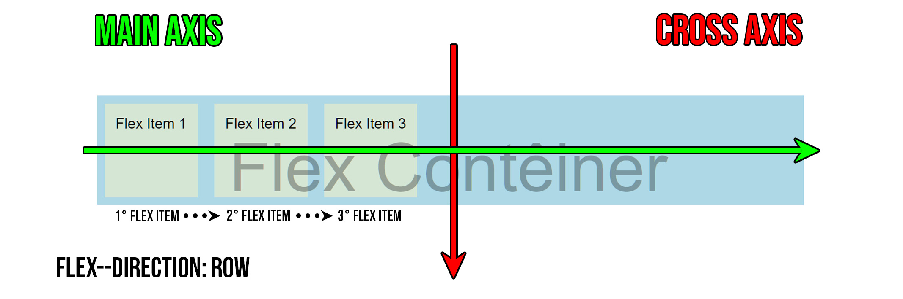
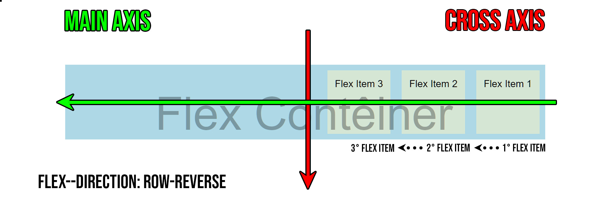
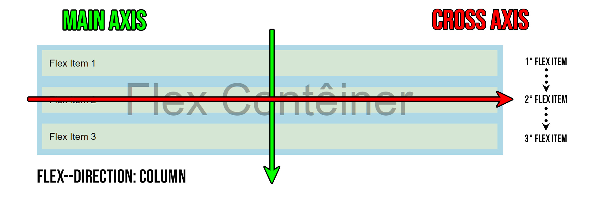
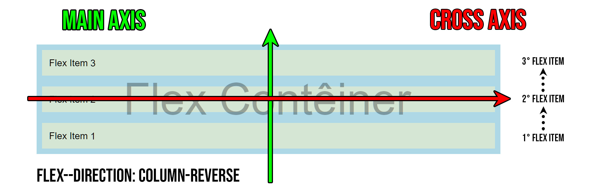
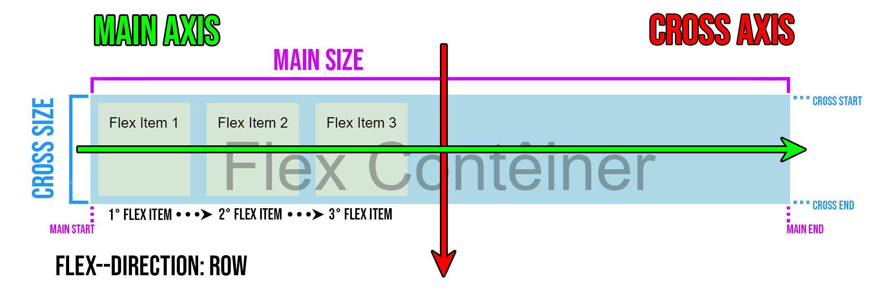

O display flex é um módulo complexo (e não uma única propriedade) focada na otimização da criação de pequenos layouts responsivos para desktops e mobile, descartando a obrigatoriedade de se utilizar o float ou posicionamento de elementos com o block, inline e inline-block. Vale destacar a frase "pequenos layouts responsivos", isto é, para grandes layouts responsivos a melhor escolha é o "grid".
Para utiliza-lo, deve ser declarado no elemento pai, fazendo com que apenas seus filhos diretos (e não os dos filhos) ajam como itens flexíveis.
Porém, para compreender a flexbox é necessário primeiramente entender todo seu funcionamento e terminologia.
O flexbox é divido em dois grupos, sendo que cada um dos grupos possui propriedades específicas:
- Flex container: é o contêiner com o display flex, sendo que dentro dele haverão outros elementos. Aqui são encontradas as propriedades:
- Flex item: são os itens que estarão dentro de um flex containêr. Aqui são encontradas as seguintes propriedades:
Exemplo (a parte azul é o container flex, e as divs numeradas são os itens flex):
Agora, sabendo que há dois grupos diferentes em um flexbox com suas diversas propriedades específicas, é necessário compreender o funcionamento dos eixos de uma flexbox, que são eles: o eixo principal (main axis) e o eixo transverssal (cross axis).
- Main axis: o eixo principal de um flex container é o eixo onde os flex items estarão fluindo.
- Cross axis: o eixo perpenpicular ao eixo principal, sua direção depende da direção do eixo principal..
Porém, com as propriedades de flex container é possível mudar a direção do main axis, fazendo com que o conteúdo seja alinhado de outra forma. A propriedade "flex-direction" é a responsável pela alteração da direção do eixo principal, ela será usada para exemplificar o funcionamento do main axis e do cross axis.
• flex-direction: row: é o valor padrão visto acima. O main axis fica na horizontal, indo da esquerda para a direita, enquanto o cross exis fica na vertical, indo de cima para baixo. Isso cria para os flex items uma direção em linha de forma crescente.
• flex-direction: row-reverse: o main axis fica na horizontal, indo da direita para a esquerda, enquanto o cross exis fica na vertical, indo de cima para baixo. Isso cria para os flex items uma direção em linha de forma crescente.
• flex-direction: column: o main axis fica na vertical, indo de cima para baixo, enquanto o cross exis fica na horizontal, indo da para baixo. Isso cria para os flex items uma direção em linha de forma crescente.
• flex-direction: column-reverse: o main axis fica na vertical, indo de cima para baixo, enquanto o cross exis fica na horizontal, indo da para baixo. Isso cria para os flex items uma direção em linha de forma crescente.
Outro detalhe a se atentar é o início e fim dos eixos, pois eles também fazem parte do direcionamento, e entender como eles funcionam é essencial para entender os eixos na sua totalidade.
O módulo flex dispõe de diversas propriedades para personalizar o flex container:
1) flex-flow: é a shorthand property para o flex-direction e o flex-wrap. É definido primeiro pelo valor de direction e depois pelo valor de wrap.
1.1) flex-direction: define a direção do main axis e do cross axis.
1.1.1) column: os flex itens ficarão empilhados, como uma coluna. O main axis ficará na vertical e irá de cima para baixo, e o cross axis ficará na horizontal.
Exemplo:
1.1.2) column-reverse: os flex itens ficarão empilhados, como uma coluna, porém em ordem decrescente. O main axis ficará na vertical e irá de baixo para cima, e o cross axis ficará na horizontal.
Exemplo:
1.1.3) row: os flex itens ficarão um ao lado do outro. O main axis ficará na horizontal e irá da esquerda para a direita, e o cross axis ficará na vertical de cima para baixo. É o valor padrão.
Exemplo:
1.1.4) row-reverse: os flex itens ficarão um ao lado do outro. O main axis ficará na horizontal e irá da direita para a esquerda, e o cross axis ficará na vertical de cima para baixo. É o valor padrão.
Exemplo:
1.2) flex-wrap: define o comportamento de wrap (envolvimento) dos flex itens. Compreende os seguintes valores:
1.2.1) nowrap: os flex itens não realizarão um wrap nunca. É o valor padrão do flex-wrap.
Exemplo:
1.2.2) wrap: os flex itens realizarão um wrap quando necessário.
Exemplo (tente redimensionar a viewport):
1.2.3) wrap-reverse: os flex itens realizarão um wrap quando necessário, porém de forma invertida (ao invés dos próximos itens caíram para baixo, eles irão "cair para cima").
Exemplo:
2) justify-content: é a propriedade utilizada para definir o alinhamento dos flex items segundo o main axis.
2.1) flex-start alinha os flex itens ao início do main axis, é o valor padrão.
Exemplo:
2.3) flex-end alinha os flex itens ao final do main axis.
Exemplo:
2.3) center alinha os flex itens ao centro do main axis
Exemplo:
2.4) space-around alinha os flex items entre todo o main axis, porém com um espaço antes, entre e depois de cada item. Ou seja, há um espaço "em volta" cada flex item, mas não "entre" de cada flex item.
Exemplo:
2.5) space-evenly alinha os flex items entre todo o main axis, porém com um espaço antes, entre e depois de cada item, porém, o espaço que fica entre os itens é igual. Ou seja, há um espaço "em volta" cada flex item, mas não "entre" de cada flex item, e ainda, o espaço entre um item e outro se colide, fazendo com que todos tenham a mesma distância. Por fim, é necessário presta a devida atenção se o flex conteiner possui algum padding definido, pois isso fará com que o espaço no flex item inicial e final não seja igual aos outros que estão no meio.
Exemplo:
2.6) space-between alinha os flex items entre todo o main axis, porém com um espaço entre cada item. Ou seja, há um espaço entre cada flex item, mas não "em volta" de cada flex item.
Exemplo:
3) align-items: é a propriedade utilizada para definir o alinhamento dos flex items segundo o cross axis, respeitando um espaço igual entre cada um deles.
3.1) flex-start alinha os flex itens ao início do cross axis.
Exemplo:
3.2) flex-end alinha os flex itens ao fim do cross axis.
Exemplo:
3.3) center alinha os flex itens ao centro do cross axis.
Exemplo:
3.4) baseline alinha os flex itens segundo a linha de base de cada flex item.
Exemplo sem o baseline (center):
Exemplo com o baseline:
3.5) strech alinha os flex itens do início ao fim do cross axis.
Exemplo:
4) align-content: é a propriedade utilizada para definir o alinhamento dos flex items segundo o cross axis, sem respeitar um espaço igual entre cada um deles.
4.1) flex-start alinha os flex itens ao início do cross axis.
Exemplo:
4.2) flex-end alinha os flex itens ao fim do cross axis.
Exemplo:
4.3) center alinha os flex itens ao centro do cross axis.
Exemplo:
4.4) space-between: alinha os flex items entre todo o cross axis, porém com um espaço entre cada item. Ou seja, há um espaço entre cada flex item, mas não "em volta" de cada flex item.
Exemplo:
4.5) space-around: alinha os flex items entre todo o cross axis, porém com um espaço antes, entre e depois de cada item. Ou seja, há um espaço "em volta" cada flex item, mas não "entre" de cada flex item.
Exemplo:
4.6) strech: alinha os flex itens do início ao fim do cross axis.
Exemplo:
O módulo flex dispõe de diversas propriedades para personalizar o flex item:
1) order: modifica a posição de item flex item segundo o seu número de ordem. Quanto menor o número, mais oo início o flex item ficará, e quanto maior o número, mais ao fim o flex item ficará. Vale destacar que números negativos também são aceitos nesta propriedade.
Exemplo:
2) flex: é a shorthand property para o flex-grow, flex-shrink e flex-basis (flex: 1 0 200px).
2.1) flex-grow: define o quanto certos flex items irão crescer dentro de um flex conteiner para utilizar um espaço não sendo utilizado.
Exemplo com "flex-grow: 1" em todos os flex itens:
Exemplo com "flex-grow" variado em cada flex-item:
2.2) flex-shrink: define o quanto um flex item irá encolher para caber ao lado de outros flex items dentro do flex conteiner.
Exemplo (número 2 e 10 estão com "flex-shrink: 0"):
2.3) flex-basis: define o tamanho inicial de um flex item. Ele pode parecer inútil quando o flex conteiner possui a propriedade "flex-wrap" definada como "wrap" (pois itens maiores que o conteiner automaticamente descerão no cross axis), porém, ao utilizar o valor "nowrap" o "flex-basis" é um grande auxílio para manter os flex items dentro do conteiner. Assim, caso a viewport aglobe apenas os flex items com uma largura de 200px, mas então a viewport seja redimensionada, fazendo com que seja possível cabe flex items com a largura de 400px, então assim será.
Exemplo (cada div abaixo está com o flex-basis em 400px):
3) align-self: define o alinhamento de flex items individuais segundo o cross axis.
3.1) flex-start: define o alinhamento de um flex items individual para o início do cross axis.
Exemplo de flex conteiner com "align-items: flex-end":
3.2) flex-end: define o alinhamento de um flex items individual para o fim do cross axis.
Exemplo de flex conteiner com "align-items: flex-start":
3.3) center: define o alinhamento de um flex items individual para o centro do cross axis.
Exemplo de flex conteiner com "align-items: flex-start":